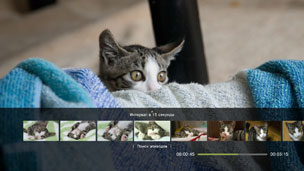
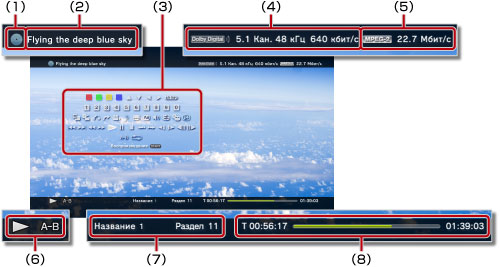

Видео > Панель управления
Панель управления
Выполнение различных операций с помощью панели управления, отображаемой на экране. Панель управления отображается и скрывается при нажатии кнопки  .
.
Ниже приведено определение отображаемых на этой странице значков.
 |
Видео, записанное на диск Blu-ray (BD), предназначенный только для чтения |
|---|---|
 |
Видео, записанное на перезаписываемый диск BD |
 |
Видео, записанное в формате AVCHD |
 |
|
 |
Видео, записанное в режиме VR на диске DVD-R/DVD-RW |
 |
Видеофайлы, сохраненные на жестком диске |
| Видеофайлы, сохраненные на носителе* |
| * |
При использовании носителя с некоторыми моделями требуется соответствующий адаптер USB (не входит в комплект поставки). |
|---|
Примечание
Иногда контент может иметь параметры воспроизведения, предварительно установленные создателем контента. В этих случаях некоторые элементы панели управления могут быть недоступны.
Красные/зеленые/желтые/синие значки


Выполняйте операции в соответствии со значком. В зависимости от содержимого функции, соответствующие значку, различаются.
Вверх/Вниз/Влево/Вправо

Выбор объекта.
Ввод
Подтверждение выбора элемента.
Цифровая клавиатура

Ввод цифр.
Всплывающее меню
Просмотр всплывающего меню.
Меню
Просмотр меню.
Высшее меню
Просмотр главного меню.
Вернуться назад
Возврат к определенному месту видео.
Поиск эпизодов


Используйте эту функцию для просмотра пиктограмм, созданных через определенные интервалы. Выберите пиктограмму, чтобы начать воспроизведение видео с изображенного на ней эпизода.

1. |
Используйте кнопки |
|---|
 или
или  для выбора интервала времени, разделяющего пиктограммы. Можно выбрать значение [Раздел] или разные варианты временных интервалов.
для выбора интервала времени, разделяющего пиктограммы. Можно выбрать значение [Раздел] или разные варианты временных интервалов.2. |
Используйте кнопки |
|---|
 или
или  для выбора пиктограммы эпизода, который вы хотите просмотреть. Начнется воспроизведение выбранного эпизода.
для выбора пиктограммы эпизода, который вы хотите просмотреть. Начнется воспроизведение выбранного эпизода.Подсказки
- Вариант [Раздел] можно выбрать только для видеофайла, содержащего информацию о разделах.
- Функцию поиска эпизода нельзя использовать для видеоматериалов, продолжительность воспроизведения которых менее одной минуты.
- Функцию поиска эпизода нельзя использовать и для некоторых других типов видеоматериалов.
- При выборе пиктограммы начинается краткий просмотр эпизода продолжительностью 15 секунд.
Перейти в


Воспроизведение с указанного раздела или времени.
| Название X | Указывается номер названия. |
|---|---|
| Раздел Х | Указывается номер раздела. |
| XX:XX / XX:XX:XX | Указывается время. |
Подсказка
В зависимости от видеофайла невозможно использовать параметр (Перейти в).
Параметры ракурса
Выбор одного из доступных углов просмотра для контента, записанного с несколькими углами просмотра.
Параметры аудио
Выбор одного из доступных параметров аудио для контента, записанного с несколькими звуковыми дорожками.
Параметры субтитров
Выбор одного из доступных параметров аудио для контента, записанного с несколькими звуковыми дорожками.
Параметры стиля субтитров
Выбор одного из доступных параметров просмотра для контента, записанного с несколькими типами субтитров.
Контроль громкости
Регулировка уровня громкости материалов, воспроизводимых в категории  (Видео). Можно выбрать один из девяти уровней.
(Видео). Можно выбрать один из девяти уровней.
Подсказки
- При слишком высоком уровне громкости воспроизведение может быть прерывистым. В таком случае уменьшите уровень громкости.
- Эту настройку можно выключить при использовании некоторых аудиоустройств или при воспроизведении некоторых типов аудио.
Настройки AV
Настройка параметров видеовыхода для содержимого, воспроизводящегося в меню (Видео). Набор доступных параметров зависит от используемого содержимого.
| Кадровое шумоподавление | Устанавливается для уменьшения сильного шума. |
|---|---|
| Блочное шумоподавление | Устанавливается для уменьшения мозаичных блочных помех, отображаемых на экране. |
| Снижение москитного шума | Снижение "москитного шума" у краев изображения. |
| Функция Upscaling | Этот параметр служит для применения функции Upscaling к выходным данным. Заданное значение отображается в разделе [Upscaler] меню  (Настройки) > (Настройки) >  (Настройки видео). (Настройки видео). |
| Формат вывода видео | Служит для установки формата вывода видео. Выберите формат вывода видео для воспроизведения DVD или BD. Заданное значение отображается в разделе [BD / DVD Формат вывода видео (HDMI)] в меню (Настройки) > (Настройки видео). |
| Y Pb / Cb Pr / Cr Super-White | Этот параметр служит для отображения Super-White. Вывод сигнала Super-White возможен при воспроизведении дисков DVD, BD или AVCHD. Установленное значение отображается в разделе [Y Pb / Cb Pr / Cr Super-White (HDMI)] меню (Настройки) >  (Настройки экрана). (Настройки экрана). |
| Полный диапазон RGB | Служит для отображения полного диапазона RGB. Установленное значение отображается в разделе [RGB полный] в меню (Настройки) > (Настройки экрана). |
| Контроль динамического диапазона | Настройка контроля динамического диапазона. Включение и отключение функции контроля динамического диапазона в системе PS3™ при воспроизведении дисков BD и DVD со звуком в формате Dolby Digital. Выбранное значение отображается в разделе [BD/DVD Контроль динамического диапазона] в меню (Настройки) > (Настройки видео). |
| Формат аудиовыхода | Служит для установки формата вывода аудио. Выберите формат вывода аудио для дисков DVD или BD. Выбранное значение отображается в поле [Формат вывода аудио BD/DVD (HDMI)] или [Формат вывода (цифровой оптический) аудио BD] в разделе (Настройки) > (Настройки видео). |
Параметры времени
Устанавливается для отображения прошедшего или оставшегося времени для названия или раздела. Отображаемые элементы зависят от воспроизводимого контента.
Режим экрана
Изменение режима экрана.
| Обычный | Устанавливается для отображения видео по размеру экрана без изменения пропорций. |
|---|---|
| Масштаб | Устанавливается для отображения видео во весь экран без изменения пропорций. Верхние и нижние или левые и правые части видео обрезаются. |
| Во весь экран | При выборе этого параметра изображение занимает весь экран за счет растяжения по ширине и высоте экрана с изменением пропорций. |
| Исходный | Устанавливается для отображения видео в оригинальном размере. |
Подсказка
В зависимости от видеофайла, возможно, не удастся переключить режим экрана.
Изменить заставку
Изменение значка (эскиза изображения), связанного с видеофайлом. Во время воспроизведения видеофайла выберите (Изменить заставку) в то время, когда отображается изображение, которое требуется выбрать в качестве значка.
Подсказки
- В зависимости от видеофайла, возможно, не удастся изменить значок.
- Видеофайл короче двух секунд нельзя использовать в качестве значка.
Удалить
Удаление воспроизводящегося видеофайла.
Отобразить
Просмотр состояния воспроизведения и другой связанной информации. Отображаемая информация зависит от воспроизводимого контента.

(1) |
Носитель |
|---|---|
(2) |
Название |
(3) |
Панели управления |
(4) |
Аудио кодек/номер канала/частота дискретизации/скорость передачи данных |
(5) |
Видео кодек/скорость передачи данных |
(6) |
Значок состояния |
(7) |
Название/раздел |
(8) |
Время, прошедшее с начала воспроизведения/общее время |
Назад (вернуться в начало)/Далее
Переход к предыдущей или следующей главе.
Подсказка
При воспроизведении видеофайлов, сохраненных на носителе или жестком диске, кнопка  (Далее) будет недоступна. А также при выборе
(Далее) будет недоступна. А также при выборе  (Назад) будет запущено воспроизведение с начала видеофайла.
(Назад) будет запущено воспроизведение с начала видеофайла.
Быстро (перемотка назад)/Быстро (перемотка вперед)
Быстрая перемотка воспроизводимого контента вперед или назад. При каждом нажатии кнопки  изменяется скорость воспроизведения.
изменяется скорость воспроизведения.
Воспроизведение
Запуск воспроизведения контента.
Подсказка
В большинстве случаев после остановки воспроизведения видео при следующем запуске оно будет возобновлено с точки остановки.
Для воспроизведения с начала нажмите кнопку PS, чтобы остановить воспроизведение и отобразить меню XMB™. Выберите значок, нажмите кнопку и выберите в меню параметров [Воспроизведение с начала].
Пауза
Временная приостановка воспроизведения.
Стоп
Остановка воспроизведения.
Мгновенное повторное воспроизведение/Мгновенное продвижение
Перемотка видео на 15 секунд назад или на 15 секунд вперед.
Замедленно (назад)/Медленно (перемотка вперед) 
Замедленное воспроизведение.
По кадрам назад/По кадрам вперед
Воспроизведение в покадровом режиме.
Повтор A-B
Повторное воспроизведение указанного фрагмента контента.
1. |
В начале фрагмента для повторного воспроизведения нажмите кнопку |
|---|---|
2. |
В конце фрагмента для повторного воспроизведения нажмите кнопку |
Подсказка
Для отмены функции "Повтор A-B" нажмите кнопку (Повтор A-B).
Повтор
Повторное воспроизведение контента.
Подсказка
Для отмены функции "Повтор" нажмите кнопку (Повтор) и удерживайте ее, пока не отобразится индикация [Повтор выключен].